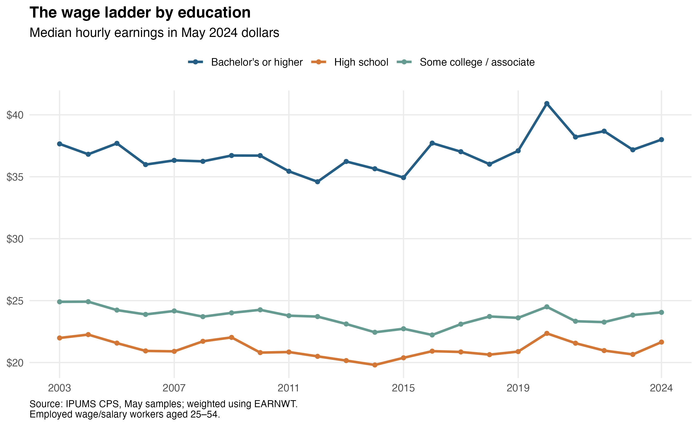
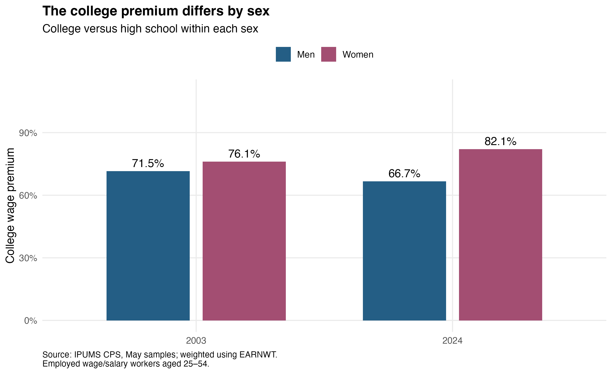

The College Wage Premium: Large, but Not Steadily Growing
economics
education
data-visualization
College-educated workers earned about 75.5% more per hour than high-school graduates in May 2024, based on the weighted medians in this sample. That is a large advantage. But whether it has grown since 2003 depends on which workers we compare: the gap increased slightly in the main sample and declined slightly when I restricted it to full-time workers.
That distinction matters when discussing education and pay. A large wage advantage today does not automatically mean the advantage is growing, or that graduates’ purchasing power has improved.
I use IPUMS Current Population Survey data for employed wage and salary workers aged 25–54, comparing May observations from 2003 through 2024. These are historical snapshots, not a measure of today’s job market.
A large advantage, little change at the endpoints
In May 2024, workers with a bachelor’s degree or higher had median hourly earnings of $38.00, compared with $21.65 for high-school graduates and $24.05 for those with some college or an associate degree.
The separation between the groups is clear. The change over time is less dramatic: in May 2024 dollars, the college median was $37.65 in 2003, while the high-school median was $21.98. Both were close to their 2024 levels.
I read this as a distinction between relative advantage and progress in purchasing power. College graduates can remain well ahead of another group without their own real median earnings rising much. Neither finding cancels the other.
Is the gap growing? The comparison matters
The college wage premium measures how much higher the college median is than the high-school median, as a percentage of the high-school median.
The premium moved from 71.3% in 2003 to 75.5% in 2024, with fluctuations in between. It reached 84.5% in 2022 before falling. That is not a steady upward path.
Restricting the sample to workers usually working at least 35 hours per week changes the endpoint story: the premium moved from 71.9% to 70.4%. The direction reverses, although the large college advantage remains.
For me, that check is a reason to be cautious about a headline declaring that the gap is widening. The enduring gap is clearer than the small change between two selected years. I have not calculated confidence intervals, so these movements are not established statistically significant changes.
Employment composition also matters. A rise in the median can reflect changes in who is working, not just pay increases. These comparisons do not follow individual workers’ wage growth or establish what caused the movements around 2020.
One overall number hides different patterns

Among women, the premium rose from 76.1% to 82.1%; among men, it fell from 71.5% to 66.7%. The overall comparison conceals these different directions.
A larger premium for women does not mean women earn more than men. Each percentage compares college and high-school graduates within the same sex. It also cannot tell us whether education itself explains the gap: occupation, experience and selection into employment may differ.
What I take from these results
The strongest finding is a persistent college wage advantage, not a consistently widening one. I would ask who is included and which years are compared before drawing conclusions from a single premium.
These results also do not settle whether college is worth its cost. They describe employed workers, include graduate degrees, and do not measure tuition, forgone earnings or the causal effect of attending college.
Data, methods and reproducibility
The sample contains 171,391 person-month observations with at least a high-school qualification. I exclude self-employed workers and invalid earnings or hours. Hourly earnings are weekly earnings divided by usual main-job hours; all medians use EARNWT, the CPS earnings-study weight. BLS CPI-U converts wages to May 2024 dollars. These are May snapshots, not annual averages.
I use the harmonized rounded earnings series and cap weekly earnings at $2,884.61 across years. The cap leaves the overall education-group medians unchanged, but does not eliminate all measurement differences from the 2023–2024 reporting changes. Imputed earnings remain included because allocation flags were not downloaded.
Sources: IPUMS CPS, its earnings and weight documentation, and BLS CPI-U. The repository and README provide code, saved figures and results, plus instructions for obtaining the IPUMS extract and reproducing the analysis.